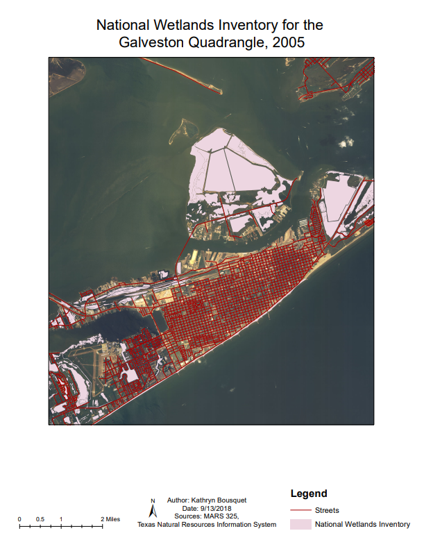
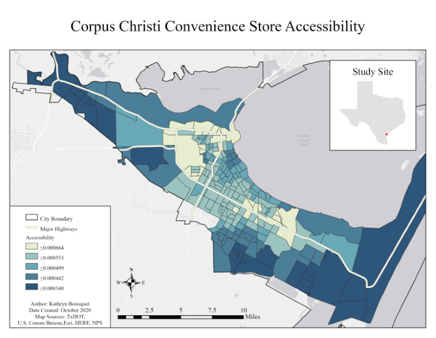

About Me
I'm a GIS Analyst and self-taught frontend developer. I graduated with a Master's in Geospatial Engineering in May 2021 and have experience using ArcMap and ArcGIS Pro. In my free time, I have been studying JavaScript, HTML, and CSS. I have also begun studying React and ArcGIS API for JS, with the goal of utilizing my GIS knowledge for frontend development on spatial applications.
My Skills
Software
- ArcMap
- ArcGIS Pro
- Microsoft Office
Programming Languages
- HTML
- CSS
- JavaScript
- Python*
- SQL*
Tools
- React*
Strengths
- Data analysis
- Detail-oriented
- Communication
- Problem solving
* Beginner
Frontend Projects
All of the projects listed below were assigned by the Odin Project curriculum, a popular self-study course on Fullstack Development. The Odin Project does not provide solutions for it's projects, so these are 100% my code. I am currently about halfway through the intermediate JavaScript section of the course.
Landing Page
Built with: HTML, CSS
This was a beginner HTML and CSS project to practice Flexbox. For this project, we were provided an image of the design and instructed to recreate it using the skills we learned so far.
Rock Paper Scissors
Built with: HTML, CSS, JavaScript
This simple implementation of a childhood classic was my first JS project. In this project, I gained a deepened understanding of functions and event listeners. This was also my first attempt at using public fonts from the web.
Etch-a-Sketch
Built with: HTML, CSS, JavaScript
My second JS project was this other childhood classic. In this project, I learned the basics of CSS grid, gained more experience using Flexbox, deepened my understanding of DOM manipulation, and learned about Event Delegation.
Calculator
Built with: HTML, CSS, JavaScript
This is an implementation of a basic calculator. This project was especially rewarding once I finally began to understand the logic behind it. This is where I would say things really began to "click".
Sign-up Form
Built with: HTML, CSS
This fake sign-up form project was practice for more intermediate-level HTML and CSS.
Admin Dashboard
Built with: HTML, CSS
This was another project to help solidify intermediate-level HTML and CSS. This is another project where we were provided an image of the design and instructed to recreate it using the skills we learned so far.
Library app
Built with: HTML, CSS, JavaScript
This is an implementation of a library app, where you can store information on books you have. When you add a book, you can indicate whether you have read the book before. If not, you are able to toggle 'Read' at a later time. The goal of this project was to practice Objects and Prototypes.
GIS Projects
My GIS projects are divided into two types. Course Assignments were assigned to me during my undergraduate studies. The data and objectives were provided for most of these. However, the steps to complete them were up do me. Independent Projects were assigned to me during my graduate studies. For these projects, I was given no specified objectives, instructions, or data. They were completed solely by me. Please note these lists are not exhaustive.
Click each project's title to view more details!
Course Assignments
Independent Projects
My Very First Map
The primary goal of this assignment was to become comfortable using/moving around in ArcGIS and to create and export pleasing maps. We were provided with several data layers and tasked with using at least three of them to create a basic map of our choice. We were also required to use three different types of symbology, one for each layer.
Finding public GIS data
The goal of this assignment was to expose us to freely available "GIS-ready data." We were provided with a list of common outlets available for free, quality GIS data, such as the U.S. Census Bureau. We were tasked with finding and utilizing at least three vector data layers and one raster data layer, from at least three different sources, all covering the same geographic extent.
I decided to create my map on the major transportation routes in the Houston-Galveston area. However, the raster layers I found did not cover the full extent.
Coordinate Systems, Projections, and Datums
The goal of this assignment was to introduce us to coordinate systems and projections. The main task was to look into the metadata of various data layers to answer various questions regarding the data's cooridnate system, spatial data type, etc. We were also tasked to create a map using the National Wetlands Inventory and Galveston street centerlines, shown below:
Working with Tables
The goal of this assignment was to introduce us to spatial data tables. The main task was to manipulate the tables to answer various questions, which involved processes such as table joins and field calculations. In the process, we were tasked to create a map using a spreadsheet with population data that we joined to a table of Texas Counties and used the field calculator to create a "percent change in population" field.
Spatial Queries and Joins
For this assignment, we were given multiple data layers that span the state of Texas and tasked with creating a map that shows the average annual precipitation in inches from 2009 - 2013 for each of the watersheds that has a precipitation station within its boundary. Where necessary, the valules of multiple stations within a single watershed needed to be averaged.
Georeferencing
For this assignment, we were given a mock scenario:
"A developer on Galveston island has proposed draining a wetland area to build a shopping center. You work for an environmental non-profit. Your boss has asked you to develop a report showing how a waterbody in this area has already been extensively drained and developed over the last 80 years. She provides you with a scanned copy of an old paper map of Galveston from 1933 and a shapefile with a polygon outlining the area where the developer is interested in building the shopping center."
Using the information from the scenario, I georeferenced the scanned map to the 2018 ESRI imagery basemap at the time, in order to find the extent of the waterbody from 1933. I also digitized the extent of the waterbody from the 2018 basemap. The end result showed a map displaying the 1933 waterbody extent, the 2018 extent, and their shared extent.
Understanding the Food and Physical Environment in the City of Corpus Christi, Texas
This was my Graduate Creative Project that I completed during my graduate studies. I had decided to not pursue the thesis track for my masters degree. Instead, I completed this creative project which was similar to a thesis in everything except length. My graduate advisor helped me find this opportunity to study the obesity crisis in Corpus Christi, Texas, the city where my university was located. Per the requirements of the graduate creative project, I wrote a 50-page project report.
Here I will include the report's abstract and most important maps that I created for the project.
Abstract:
Obesity has increased tremendously over the past four decades. Over 40% of the population in the United States (US) is obese. In 2010, Men’s Health magazine ranked the city of Corpus Christi as one of top ten fattest cities in the US, with five other Texas cities on the list as well. The goal of this project is to analyze the food and physical environment in the city of Corpus Christi. More specifically, the objective is twofold: (1) to measure spatial accessibility of food and physical environment at the block group level, and (2) to determine whether block group level socioeconomic and demographic (S/D) characteristics affect the spatial accessibilities. The food and physical environment is described through four different outlet types including supermarkets, convenient stores, fast food restaurants, and recreational sites. A modified 2SFCA method is adopted to measure spatial accessibility to each of these four different food and recreation outlet types at the block group level. The ordinary least squares (OLS) regression is used to study the associations between S/D characteristics and the food and physical environment at the block group level. For that purpose, the calculated accessibility values at block group level are used as the dependent variable while a variety of S/D datasets pulled from the 2018 American Community Survey database to be used as the explanatory variables. The Central City neighborhood generally experiences some of the highest accessibility of all outlet types, especially Fast Food and Convenience Stores. The total Hispanic population has a significant positive while the median household income has a negative association with the spatial accessibilities to all four outlet types. These findings indicate that neighborhoods with a high percentage ethnic-minorities and poorer neighborhoods have higher accessibility to unhealthy foods. These areas also have higher access of healthy foods and physical activity-promoting facilities. Overall, this project can contribute to the city’s understanding of its food and physical environment and how that may affect obesity.
Maps:
These maps display the accessibility of each outlet type, calculated using the 2 Step Floating Catchment Area method. The results of this method is an index value given to each block group which is a measure of that block group's accessibility to the given outlet type. The higher this index value, the higher the accessibility.
Predicting Deaths Due to Heart Disease using Social and Economic Determinants: A Spatial Regression Analysis
This was a semester project for my Data Mining course, where the goal was to utilize the knowledge we learned throughout the semester to create a project over a topic of our choice, complete a report, and deliver a presentation. For my project, I thought it would be interesting to use spatial regression to predict deaths due to heart disease using social and economic determininants.
This map displays the number of deaths due to heart disease per 100,000 people (source: CDC). There are 138 counties with insufficient data, which are shown in a light tan. These counties were set aside for prediction after the spatial regression.
This next map displays the same deaths due to heart disease, but with the predicted counties included.
Comparing Elevation Changes on Follet's Island, Texas, from 2006 to 2018
This was a semester project for my Spatial Systems Science course, where the goal was to utilize the knowledge we learned throughout the semester to create a project that arrives at a prescriptive or descriptive spatial analysis result. For my project, I thought it would be interesting to study the change in beach and dune elevation before and after a dune restoration project took place on Follets Island. Follets Island is a small barrier peninsula south-west of Galveston, Texas. The dune restoration took place somewhere between 2013-2014, so I found LAS point cloud data for 2006 and 2018 (source: NOAA Digital Coast LIDAR data repository). The LAS data were converted to elevation rasters using ArcGIS Pro.
This map displays the study area of Follets Island, with three of the four restoration areas outlined.
This next map displays the full elevation rasters for 2006 and 2018.
This map displays the elevation rasters for Area 2. The width of the beach front near sea level height, represented by the green area, is wider for 2006 than 2018, which suggests that the elevation in this area is higher closer to the water in 2018 than it is in 2006. There is also a strip of higher elevation for both years that appears to be the dune line when cross-referenced with ESRI's imagery basemap. This dune line appears to be closer to the water in 2018 than in 2006.
This map displays the elevation rasters for Area 3. The satements made for Area 2 appear to be the same for Area 3.

This last map displays the elevation rasters for Area 4. In this area, we actually see the opposite of Areas 2 and 3. Here, the beach front at sea level for 2018 is wider than it is for 2006. There also appears to be a lack of dunes in the northern half of Area 4 in the 2018 elevation. There are no places with significant elevation height compared to surroundings, except for these circular features that follow alongside the highway. These features, when cross-referenced with ESRI’s imagery basemap and Google Earth, appear to be man-made hills. On the difference raster, these features range between 1.73-2.25m higher in 2018 than 2006, so they must have been made sometime after the 2006 flight.
I created a table of raster statistics (not shown) that shows the mean, maximum, and minimum elevation values for each restored area, as well as for the regions outside of these. This table suggests that there is minimal change in elevation from 2006 and 2018 in the unrestored areas (0.11m), but more of a change is seen inside the restored areas (+/- 0.24m to 0.372m). The mean elevation difference for Area 4 is negative rather than positive, which suggests this area experienced a loss in elevation from 2006 to 2018.
Overall, there is a clear difference in elevation change from areas within and without the restored sections. The total region outside the restored section has a minimal mean elevation change, while the restored areas experienced a quarter-meter or greater change in elevation. There is also a clear difference in elevation change from one restored area to the next. Areas 2 and 3 experienced accretion between 2006 and 2018, whereas Area 4 has experienced erosion. It is unclear exactly what could have caused this difference. It could be due to Area 4’s adjacent proximity to the San Luis Pass, whereas the other two areas located further southwest. Vegetation bias could be also be a factor. When compared to ESRI’s imagery basemap, the 2018 raster appears to have picked up on more vegetation than in the 2006 raster. This is not to suggest that new vegetation had grown after the 2006 flight, as there was no 2006 imagery found to prove or disprove that. The techniques used to filter vegetation in the data sets might have a small part in the elevation changes seen here.
Geodatabase Design for Advanced Filtering of Real Estate Listings
This was a semester project for my Spatial Database Design course, where the goal was to utilize the geodatabase skills we learned throughout the semester to create our own geodatabase based on a topic of our choice.
For this project, I created a geodatabase for an advanced user experience in real estate search in the city of Corpus Christi, Texas. This new geodatabase gives the user access to a variety of points of interest and geography boundaries to query in their real estate search, allowing them to filter out real estate listings based on advanced proximity criteria. So far, this geodatabase includes points of interest such as recreation sites, supermarkets, fire departments, grade schools, colleges, and veterinarians. This geodatabase also includes zip code and school district boundaries. For the purpose of this project, two mock scenarios were created for families moving to the city. Each scenario defines a set of proximity requirements the family is looking for. The feature classes involved were queried and buffer analysis was applied to output land parcels that meet their requirements. This geodatabase offers the ability of being extended with other points of interest data that might relate to real estate search in the future.
Scenario 1
A family with middle school-aged children want to move to a house within their current school district, Corpus Christi ISD, that is located within a one-mile walking distance to a middle school while also within a quarter-mile from any park. For this scenario, middle schools and parks within the Corpus Christi ISD boundary were given a 1-mile buffer and 0.25-mile buffer, respectively. Only parcels within both buffers were selected and exported as suitable parcels.Scenario 2
A family enjoys adopting senior pets that were abandoned due to their old age. The family is moving to Corpus Christi and wants to live within 2.5 miles of a veterinarian so they can provide the best possible care for their aging pets. For this scenario, all veterinarians in the dataset were given a 2.5-miles buffer. Only parcels within the veterinarian buffer were selected and exported as suitable parcels.
Overall, this geodatabase could allow the user to further refine their real estate search beyond what is currently offered on popular real estate sites. Rather than finding a nice listing and then searching the surrounding area only to find out it does not meet the user’s proximity wishes, this geodatabase will speed up the search by only showing listings within the user’s proximity requirements. The user will not only be able to search for real estate listings within a certain distance to or from certain points of interest, but also can limit their search within or without specified school districts or zip codes.
Site Suitability Analysis for New Solar Farms in West Texas
This was a semester project for my Advanced Geospatial Analytics course, where the goal was to utilize the advanced geospatial skills we learned throughout the semester to create a project on a topic of our choice.
For this project, I decided to perform a site suitability analysis for solar farms, across West Texas. Type of land cover, proximity to protected lands, bodies of water, residential areas, and availability of existing transmission lines all play a key role in the selection of suitable land for new solar farm development. West Texas was chosen as a study site based on my Average Direct Normal Irradiance Across Texas map shown below:
Suitability layers were created for Aspect (land slope) and landcover suitability using classification.

This map shows the suitability distribution with a 500m buffer constraint from protected areas, water bodies, and roads (unsuitable areas shown in black). The counties are overlain for reference.
This map shows the suitability distribution with a 10,000 buffer around existing transmission lines. Actual transmission lines are not shown to prevent clutter.
Overall, the areas with the highest solar farm suitability in West Texas are sparse. Towards the west, Hudspeth, Jeff Davis, Presidio, Brewster, Pecos, Terrell, and Culberson Counties all appear to have highly suitable lands ripe for further site suitability analysis. There appears to be a prime spot, located within 10,000m of a transmission line, between Jeff Davis, Brewster, and Presidio Counties. A majority of the other highly suitable areas lie outside the range of any existing transmission line. Towards the eastern side of West Texas, Andrews, Borden, Coke, and Tom Green Counties also have areas of high suitability. However, there is a high density of roads, which suggests they are more densely populated and might not be the best areas for solar farm development.
Visualizing the Percentage of Adults with Obesity in the United States
This was a semester project for my Geospatial Visualization course, where the goal was to create a data story on a topic of our choice.
The purpose of my data story was to show the alarmingly high rates of adult obesity across the United States. I was specifically looking for obesity-related data, because my graduate creative project revolved around the high obesity rate in Corpus Christi and I wanted to explore the topic on a broader level.
I found a dataset called “Percent of Adults Aged 18 Years and Older who have Obesity" that I used to create a basic map. This data was compiled from the Behavioral Risk Factor Surveillance System (BRFSS), which is an on-going telephone interview survey conducted by the CDC and state health departments. I also created a table with the top 15 states with the highest obesity rates and a text graphic to pin down the most alarming statistics. All elements were compiled into a PDF poster, an image of which is shown below: